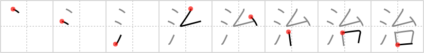

治
← →
reign

Reading:
On-Yomi: ジ、チ — Kun-Yomi: おさ.める、おさ.まる、なお.る、なお.す
Heisig story:
Water . . . pedestal.
Koohii stories:
1) [taijuando] 6-5-2006(389): From his water pedestal Neptune reigns over his Sea Empire.
2) [Stormchild] 17-7-2006(40): Build a moat around your pedestal to protect your reign of power.
3) [astgtciv] 20-1-2007(23): The reign of the Gold Medal Winner Bastard over water sports is of unsurpassed length. There he is, once again, his hair gray, wearing a bathing cap, on his pedestal with the gold medal around his neck.
4) [sethg] 22-3-2009(19): Michael Phelps reigns supreme as he stands on his watery pedestal (he just got out of the pool).
5) [Daizumi] 8-9-2008(12): From his pedestal, Manneken Pis reigns over Belgium with his…water.